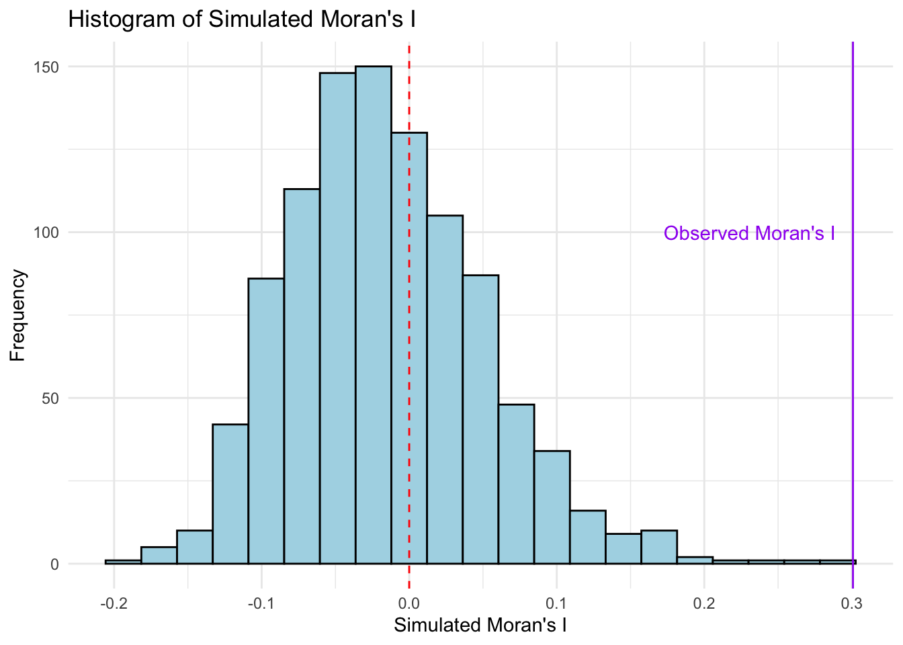
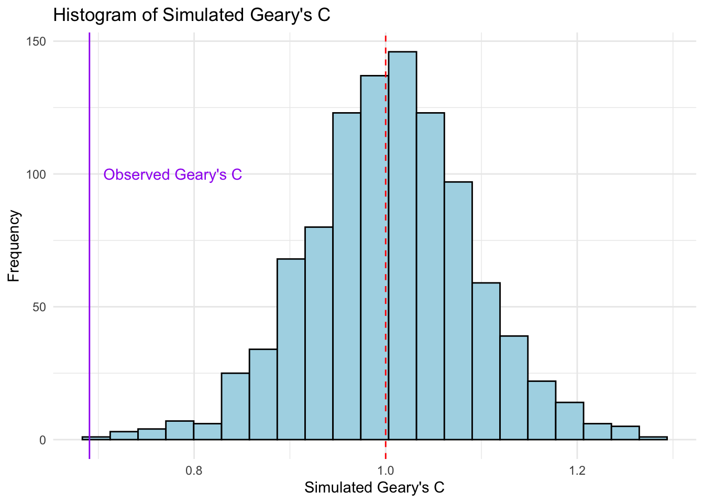

pacman::p_load(sf, spdep, tmap, tidyverse)Hands-on Ex 5A
Global Measures of Spatial Autocorrelation
1. Overview
This exercise introduces methods for computing Global Measures of Spatial Autocorrelation (GMSA). GMSA provides a summary of the overall spatial patterns within a dataset, showing whether similar values cluster together or if there is a random distribution across the entire map.
Spatial autocorrelation measures how one location’s data is related to nearby locations. With global measures, we look at the entire dataset as a whole, asking questions like: Are similar values (high or low) generally located near each other? Or are values spread out randomly? GMSA gives us a single statistic that answers these questions, giving insight into the spatial structure of our data.
One common example is Moran’s I, a widely used GMSA method. It provides a value that indicates whether there is clustering (positive autocorrelation), a dispersed pattern (negative autocorrelation), or no clear pattern (no autocorrelation). These global measures help us identify broad spatial trends, which we can later break down into more detailed local measures.
A key R package for GMSA analysis is the spdep package.
2. Importing & Transforming Data
Two datasets will be used in this hands-on exercise:
- Hunan County Boundary Layer: A geospatial dataset in ESRI shapefile format.
- Hunan_2012.csv: A CSV file containing selected local development indicators for Hunan in 2012.
hunan <- st_read(dsn = "data/geospatial",
layer = "Hunan") Reading layer `Hunan' from data source
`/Users/stephentay/stephentay/ISSS626-Geospatial-Analytics/Hands-on_Ex/Hands-on_Ex05/data/geospatial'
using driver `ESRI Shapefile'
Simple feature collection with 88 features and 7 fields
Geometry type: POLYGON
Dimension: XY
Bounding box: xmin: 108.7831 ymin: 24.6342 xmax: 114.2544 ymax: 30.12812
Geodetic CRS: WGS 84# crs = 4549 if need to converthunan2012 <- read_csv("data/aspatial/Hunan_2012.csv")Rows: 88 Columns: 29
── Column specification ────────────────────────────────────────────────────────
Delimiter: ","
chr (2): County, City
dbl (27): avg_wage, deposite, FAI, Gov_Rev, Gov_Exp, GDP, GDPPC, GIO, Loan, ...
ℹ Use `spec()` to retrieve the full column specification for this data.
ℹ Specify the column types or set `show_col_types = FALSE` to quiet this message.glimpse(hunan2012)Rows: 88
Columns: 29
$ County <chr> "Anhua", "Anren", "Anxiang", "Baojing", "Chaling", "Changn…
$ City <chr> "Yiyang", "Chenzhou", "Changde", "Hunan West", "Zhuzhou", …
$ avg_wage <dbl> 30544, 28058, 31935, 30843, 31251, 28518, 54540, 28597, 33…
$ deposite <dbl> 10967.0, 4598.9, 5517.2, 2250.0, 8241.4, 10860.0, 24332.0,…
$ FAI <dbl> 6831.7, 6386.1, 3541.0, 1005.4, 6508.4, 7920.0, 33624.0, 1…
$ Gov_Rev <dbl> 456.72, 220.57, 243.64, 192.59, 620.19, 769.86, 5350.00, 1…
$ Gov_Exp <dbl> 2703.0, 1454.7, 1779.5, 1379.1, 1947.0, 2631.6, 7885.5, 11…
$ GDP <dbl> 13225.0, 4941.2, 12482.0, 4087.9, 11585.0, 19886.0, 88009.…
$ GDPPC <dbl> 14567, 12761, 23667, 14563, 20078, 24418, 88656, 10132, 17…
$ GIO <dbl> 9276.90, 4189.20, 5108.90, 3623.50, 9157.70, 37392.00, 513…
$ Loan <dbl> 3954.90, 2555.30, 2806.90, 1253.70, 4287.40, 4242.80, 4053…
$ NIPCR <dbl> 3528.3, 3271.8, 7693.7, 4191.3, 3887.7, 9528.0, 17070.0, 3…
$ Bed <dbl> 2718, 970, 1931, 927, 1449, 3605, 3310, 582, 2170, 2179, 1…
$ Emp <dbl> 494.310, 290.820, 336.390, 195.170, 330.290, 548.610, 670.…
$ EmpR <dbl> 441.4, 255.4, 270.5, 145.6, 299.0, 415.1, 452.0, 127.6, 21…
$ EmpRT <dbl> 338.0, 99.4, 205.9, 116.4, 154.0, 273.7, 219.4, 94.4, 174.…
$ Pri_Stu <dbl> 54.175, 33.171, 19.584, 19.249, 33.906, 81.831, 59.151, 18…
$ Sec_Stu <dbl> 32.830, 17.505, 17.819, 11.831, 20.548, 44.485, 39.685, 7.…
$ Household <dbl> 290.4, 104.6, 148.1, 73.2, 148.7, 211.2, 300.3, 76.1, 139.…
$ Household_R <dbl> 234.5, 121.9, 135.4, 69.9, 139.4, 211.7, 248.4, 59.6, 110.…
$ NOIP <dbl> 101, 34, 53, 18, 106, 115, 214, 17, 55, 70, 44, 84, 74, 17…
$ Pop_R <dbl> 670.3, 243.2, 346.0, 184.1, 301.6, 448.2, 475.1, 189.6, 31…
$ RSCG <dbl> 5760.60, 2386.40, 3957.90, 768.04, 4009.50, 5220.40, 22604…
$ Pop_T <dbl> 910.8, 388.7, 528.3, 281.3, 578.4, 816.3, 998.6, 256.7, 45…
$ Agri <dbl> 4942.253, 2357.764, 4524.410, 1118.561, 3793.550, 6430.782…
$ Service <dbl> 5414.5, 3814.1, 14100.0, 541.8, 5444.0, 13074.6, 17726.6, …
$ Disp_Inc <dbl> 12373, 16072, 16610, 13455, 20461, 20868, 183252, 12379, 1…
$ RORP <dbl> 0.7359464, 0.6256753, 0.6549309, 0.6544614, 0.5214385, 0.5…
$ ROREmp <dbl> 0.8929619, 0.8782065, 0.8041262, 0.7460163, 0.9052651, 0.7…The GDP per Capita (GDPCC) from hunan2012 is needed to be added into hunan’s sf dataframe. The datasets are joined by County.
hunan <- left_join(hunan, hunan2012, by = "County") %>%
select(1:4, 7, 15)
glimpse(hunan)Rows: 88
Columns: 7
$ NAME_2 <chr> "Changde", "Changde", "Changde", "Changde", "Changde", "Chan…
$ ID_3 <int> 21098, 21100, 21101, 21102, 21103, 21104, 21109, 21110, 2111…
$ NAME_3 <chr> "Anxiang", "Hanshou", "Jinshi", "Li", "Linli", "Shimen", "Li…
$ ENGTYPE_3 <chr> "County", "County", "County City", "County", "County", "Coun…
$ County <chr> "Anxiang", "Hanshou", "Jinshi", "Li", "Linli", "Shimen", "Li…
$ GDPPC <dbl> 23667, 20981, 34592, 24473, 25554, 27137, 63118, 62202, 7066…
$ geometry <POLYGON [°]> POLYGON ((112.0625 29.75523..., POLYGON ((112.2288 2…3. Geovisualisation & Choropleth Map
A basemap and a choropleth map showing the distribution of GDP per capita are plotted.
equal <- tm_shape(hunan) +
tm_fill("GDPPC",
n = 5,
style = "equal") +
tm_borders(alpha = 0.5) +
tm_layout(main.title = "Equal interval classification")
quantile <- tm_shape(hunan) +
tm_fill("GDPPC",
n = 5,
style = "quantile") +
tm_borders(alpha = 0.5) +
tm_layout(main.title = "Equal quantile classification")
tmap_arrange(equal,
quantile,
asp=1,
ncol=2)
4. Preparing for Global Measures of Spatial Autocorrelation
Before we can compute global spatial autocorrelation statistics, we need to perform the following steps:
Spatial weights define the neighborhood relationships between geographical units (e.g., counties) in the study area. In the code chunk below, the poly2nb() function from the spdep package is used to compute contiguity-based weight matrices for the study area. This function creates a list of neighboring regions by identifying those that share common boundaries. The following computes the Queen contiguity weight matrix.
The summary report indicates that there are 88 area units in Hunan. The most connected unit has 11 neighboring units, while two units have only one neighbor each.
wm_q <- poly2nb(hunan,
queen=TRUE)
summary(wm_q)Neighbour list object:
Number of regions: 88
Number of nonzero links: 448
Percentage nonzero weights: 5.785124
Average number of links: 5.090909
Link number distribution:
1 2 3 4 5 6 7 8 9 11
2 2 12 16 24 14 11 4 2 1
2 least connected regions:
30 65 with 1 link
1 most connected region:
85 with 11 linksNext, we need to assign weights to each neighboring polygon. In this case, we will use equal weights (style = “W”), meaning each neighbor receives a weight of 1/(no. of neighbors). These weights are then used to calculate the weighted sum of income values from neighboring counties. While this method is straightforward and intuitive, it has a limitation: polygons on the edges of the study area may have fewer neighbors, which can lead to over- or under-estimation of spatial autocorrelation. For simplicity, we’ll use the “W” option here, but it’s worth noting that more robust alternatives, such as style = “B”, are available.
rswm_q <- nb2listw(wm_q,
style="W",
zero.policy = TRUE)
rswm_qCharacteristics of weights list object:
Neighbour list object:
Number of regions: 88
Number of nonzero links: 448
Percentage nonzero weights: 5.785124
Average number of links: 5.090909
Weights style: W
Weights constants summary:
n nn S0 S1 S2
W 88 7744 88 37.86334 365.91475. GMSA: Moran’s I
In this section, we will perform Moran’s I statistical testing.
We conduct Moran’s I statistical test using the moran.test() function from the spdep package. From the results, Moran’s I is 0.30, which is greater than 0, indicating positive spatial autocorrelation. Since the p-value is less than .001, the result is statistically significant. This means that the observations are not randomly distributed but are spatially clustered, with similar values tending to be near each other.
moran.test(hunan$GDPPC,
listw=rswm_q,
zero.policy = TRUE,
na.action=na.omit)
Moran I test under randomisation
data: hunan$GDPPC
weights: rswm_q
Moran I statistic standard deviate = 4.7351, p-value = 1.095e-06
alternative hypothesis: greater
sample estimates:
Moran I statistic Expectation Variance
0.300749970 -0.011494253 0.004348351 The Monte Carlo Moran’s I test is used to assess the significance of spatial autocorrelation by comparing the observed Moran’s I to a distribution of Moran’s I values generated through random permutations. It helps determine whether the observed spatial pattern is significantly different from what could be expected under randomness.
A permutation test for Moran’s I statistic conducted using moran.mc() function from the spdep package, with 1,000 simulations. This Monte Carlo approach generates a distribution of Moran’s I values by randomly shuffling the spatial data and recalculating Moran’s I for each simulation. It allows us to compare the observed Moran’s I against this randomized distribution to assess its significance.
From the results, the observed Moran’s I statistic is 0.30, which is greater than 0, indicating positive spatial autocorrelation. Since the p-value is 0.001, the result is statistically significant. This means that the observed spatial pattern is unlikely to have occurred by chance; there is spatial clustering, where similar values tend to be located near each other.
set.seed(1234)
bperm = moran.mc(hunan$GDPPC,
listw=rswm_q,
nsim=999,
zero.policy = TRUE,
na.action=na.omit)
bperm
Monte-Carlo simulation of Moran I
data: hunan$GDPPC
weights: rswm_q
number of simulations + 1: 1000
statistic = 0.30075, observed rank = 1000, p-value = 0.001
alternative hypothesis: greaterIt is good practice to examine the simulated Moran’s I test statistics in greater detail. This can be done by plotting the distribution of these values as a histogram.
mean(bperm$res[1:999])[1] -0.01504572var(bperm$res[1:999])[1] 0.004371574summary(bperm$res[1:999]) Min. 1st Qu. Median Mean 3rd Qu. Max.
-0.18339 -0.06168 -0.02125 -0.01505 0.02611 0.27593 data <- data.frame(simulated_I = bperm$res)
# Plot the histogram using ggplot2
ggplot(data, aes(x = simulated_I)) +
geom_histogram(binwidth = diff(range(bperm$res))/20, fill="lightblue", color="black") +
geom_vline(xintercept = 0, color = "red", linetype = "dashed") +
geom_vline(xintercept = 0.30075, color = "purple") +
annotate("text", x = 0.30075, y = 100,
label = "Observed Moran's I", color = "purple", vjust = 0.5, hjust = 1.1) +
labs(x = "Simulated Moran's I", y = "Frequency", title = "Histogram of Simulated Moran's I") +
theme_minimal()
6. GMSA: Geary’s C
In this section, we will perform Geary’s C statistical testing.
We conduct Geary’s C statistical test using the geary.test() function from the spdep package. From the results, Geary’s C is 0.69, which is less than 1. This indicates positive spatial autocorrelation, meaning that neighboring areas tend to have similar values. Since the p-value is less than 0.001, the result is statistically significant, suggesting that the observed spatial pattern is unlikely due to random chance. Therefore, the data shows spatial clustering, where similar values tend to be located near each other.
geary.test(hunan$GDPPC, listw=rswm_q)
Geary C test under randomisation
data: hunan$GDPPC
weights: rswm_q
Geary C statistic standard deviate = 3.6108, p-value = 0.0001526
alternative hypothesis: Expectation greater than statistic
sample estimates:
Geary C statistic Expectation Variance
0.6907223 1.0000000 0.0073364 A permutation test for Geary’s C statistic was conducted using the geary.mc() function from the spdep package, with 1,000 simulations. This Monte Carlo approach creates a distribution of Geary’s C values by randomly shuffling the spatial data and recalculating Geary’s C for each simulation. This allows us to compare the observed Geary’s C against the randomized distribution to assess the significance of the spatial autocorrelation.
From the results, the observed Geary’s C statistic is 0.69, which is less than 1, indicating positive spatial autocorrelation. Since the p-value is 0.001, the result is statistically significant, meaning the observed spatial pattern is unlikely to have occurred by chance. Therefore, the data shows spatial clustering, where similar values are more likely to be found near each other.
set.seed(1234)
bperm = geary.mc(hunan$GDPPC,
listw=rswm_q,
nsim=999)
bperm
Monte-Carlo simulation of Geary C
data: hunan$GDPPC
weights: rswm_q
number of simulations + 1: 1000
statistic = 0.69072, observed rank = 1, p-value = 0.001
alternative hypothesis: greaterNext, we plot a histogram to reveal the distribution of the simulated values.
mean(bperm$res[1:999])[1] 1.004402var(bperm$res[1:999])[1] 0.007436493summary(bperm$res[1:999]) Min. 1st Qu. Median Mean 3rd Qu. Max.
0.7142 0.9502 1.0052 1.0044 1.0595 1.2722 data <- data.frame(simulated_C = bperm$res)
# Plot the histogram using ggplot2
ggplot(data, aes(x = simulated_C)) +
geom_histogram(binwidth = diff(range(bperm$res))/20, fill="lightblue", color="black") +
geom_vline(xintercept = 1, color = "red", linetype = "dashed") +
geom_vline(xintercept = 0.69072, color = "purple") +
annotate("text", x = 0.69072, y = 100,
label = "Observed Geary's C", color = "purple", vjust = 0.5, hjust = -0.1) +
labs(x = "Simulated Geary's C", y = "Frequency", title = "Histogram of Simulated Geary's C") +
theme_minimal()
7. Spatial Correlogram
A spatial correlogram is a tool used to assess and visualize spatial autocorrelation against increasing distances (lags) between spatial observations. It plots a measure of spatial autocorrelation, such as Moran’s I or Geary’s C, against distance, allowing us to see how relationships between spatial observations change as the distance between them increases. Correlograms help identify how far spatial dependence extends and whether it weakens, strengthens, or fluctuates with distance.
::: panel-tabset ## 1. Moran’s I correlogram The sp.correlogram() function from the spdep package is used to compute a 6-lag spatial correlogram for GDP per capita (GDPPC), with Moran’s I as the measure of global spatial autocorrelation.
MI_corr <- sp.correlogram(wm_q,
hunan$GDPPC,
order=6,
method="I",
style="W")
plot(MI_corr)
Plotting the output alone may not provide a complete interpretation, as not all autocorrelation values are statistically significant. Therefore, it’s important to review the full analysis by printing the results, as shown in the code chunk below.
The results reveal that: - Spatial Clustering at Short Distances: There is evidence of spatial clustering of similar GDP per capita values within shorter distances (lags 1-3). Neighboring areas are likely to have similar economic performance. - Diminishing Spatial Autocorrelation with Distance: Beyond lag 3, spatial autocorrelation weakens and eventually becomes insignificant at larger distances. This suggests that the relationship between neighboring areas becomes weaker as the distance between them increases.
print(MI_corr)Spatial correlogram for hunan$GDPPC
method: Moran's I
estimate expectation variance standard deviate Pr(I) two sided
1 (88) 0.3007500 -0.0114943 0.0043484 4.7351 2.189e-06 ***
2 (88) 0.2060084 -0.0114943 0.0020962 4.7505 2.029e-06 ***
3 (88) 0.0668273 -0.0114943 0.0014602 2.0496 0.040400 *
4 (88) 0.0299470 -0.0114943 0.0011717 1.2107 0.226015
5 (88) -0.1530471 -0.0114943 0.0012440 -4.0134 5.984e-05 ***
6 (88) -0.1187070 -0.0114943 0.0016791 -2.6164 0.008886 **
---
Signif. codes: 0 '***' 0.001 '**' 0.01 '*' 0.05 '.' 0.1 ' ' 12. Geary’s C correlogram
In the code chunk below, the sp.correlogram() function from the spdep package is used to compute a 6-lag spatial correlogram for GDP per capita (GDPPC), using Geary’s C as the measure of global spatial autocorrelation.
GC_corr <- sp.correlogram(wm_q,
hunan$GDPPC,
order=6,
method="C",
style="W")
plot(GC_corr)
The results reveal that: - Spatial Clustering at Short Distances: There is evidence of spatial clustering of similar GDP per capita values within shorter distances (lags 1-2). Neighboring areas are likely to have similar economic performance. - Diminishing Spatial Autocorrelation with Distance: Beyond lag 2, spatial autocorrelation weakens and eventually becomes insignificant at larger distances. This suggests that the relationship between neighboring areas becomes weaker as the distance between them increases.
print(GC_corr)Spatial correlogram for hunan$GDPPC
method: Geary's C
estimate expectation variance standard deviate Pr(I) two sided
1 (88) 0.6907223 1.0000000 0.0073364 -3.6108 0.0003052 ***
2 (88) 0.7630197 1.0000000 0.0049126 -3.3811 0.0007220 ***
3 (88) 0.9397299 1.0000000 0.0049005 -0.8610 0.3892612
4 (88) 1.0098462 1.0000000 0.0039631 0.1564 0.8757128
5 (88) 1.2008204 1.0000000 0.0035568 3.3673 0.0007592 ***
6 (88) 1.0773386 1.0000000 0.0058042 1.0151 0.3100407
---
Signif. codes: 0 '***' 0.001 '**' 0.01 '*' 0.05 '.' 0.1 ' ' 1